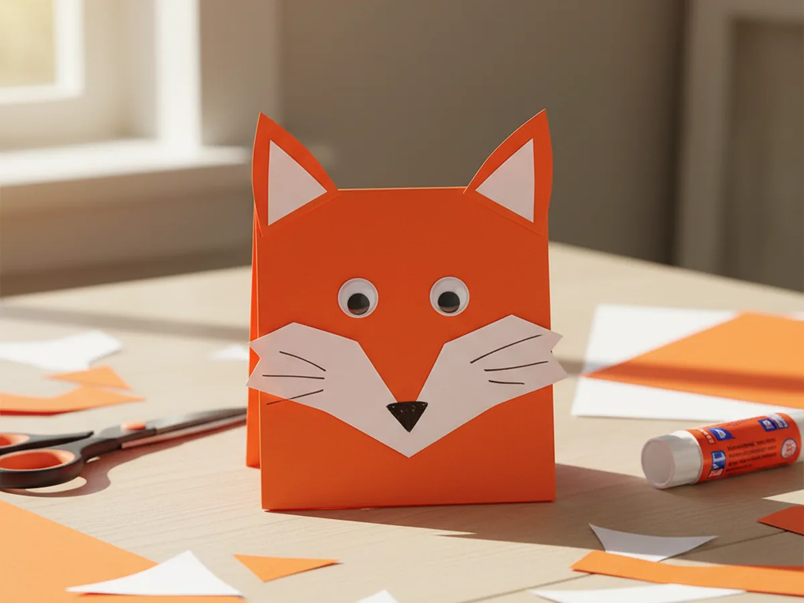
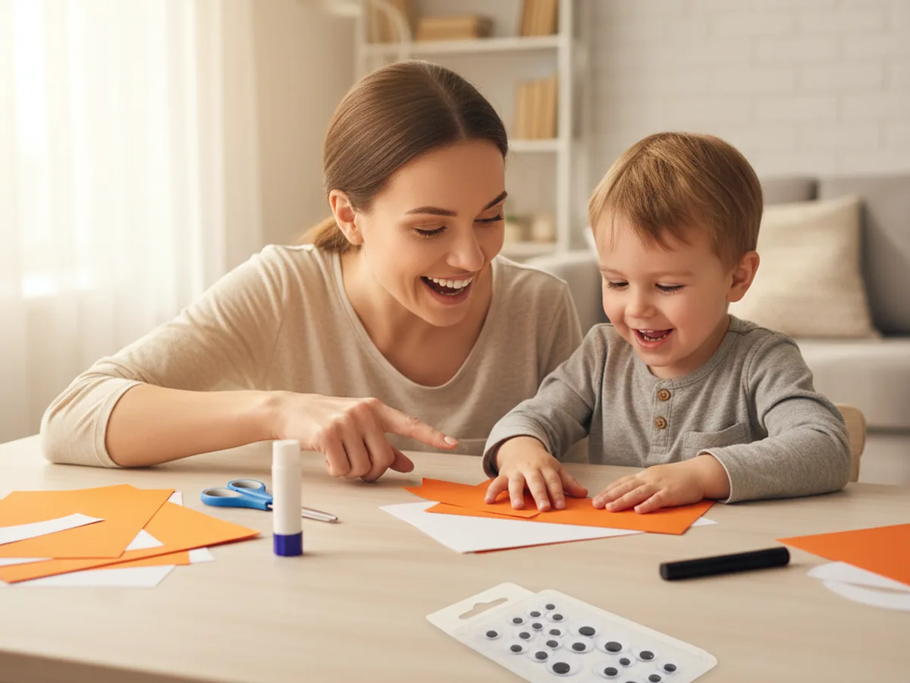
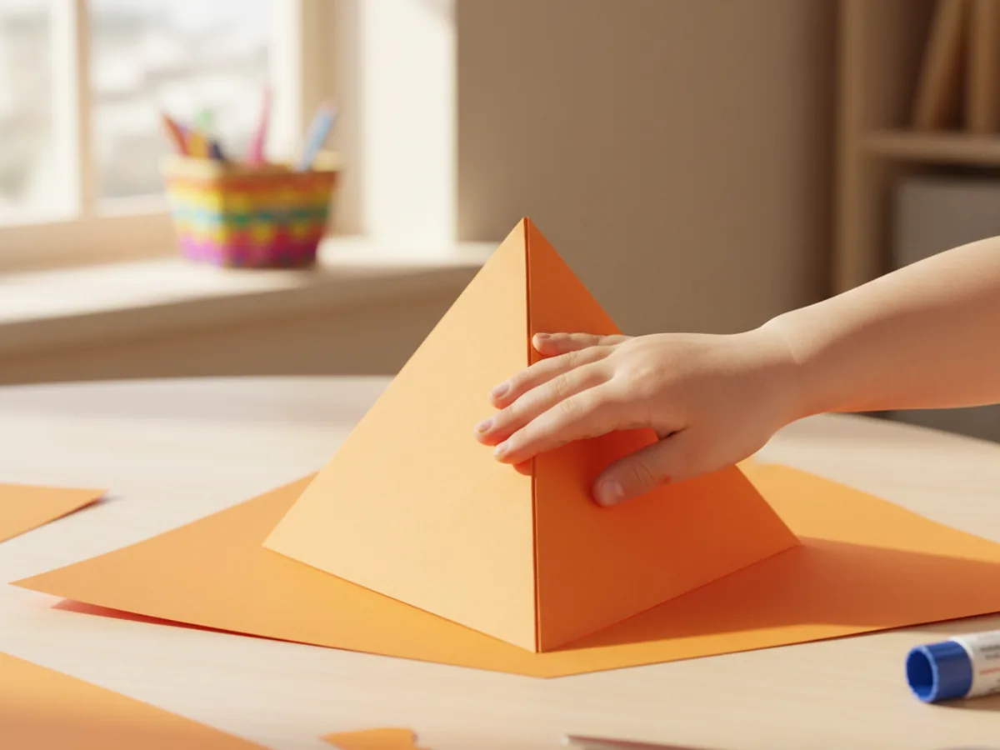
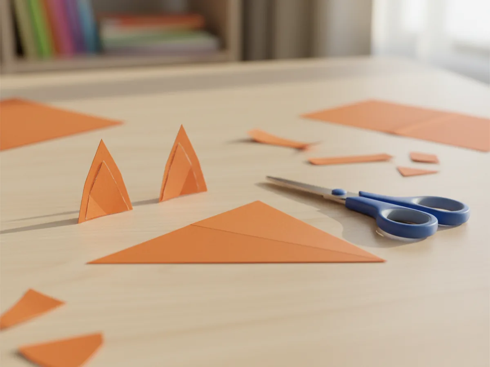
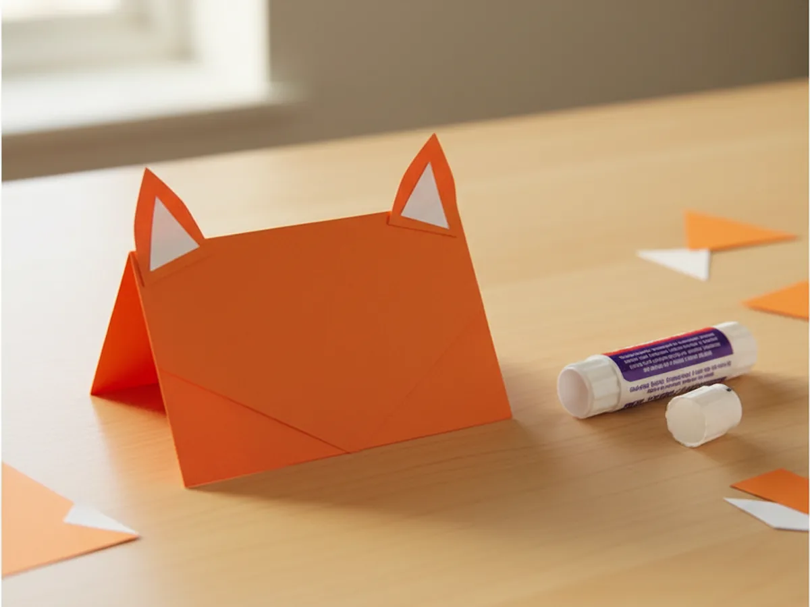
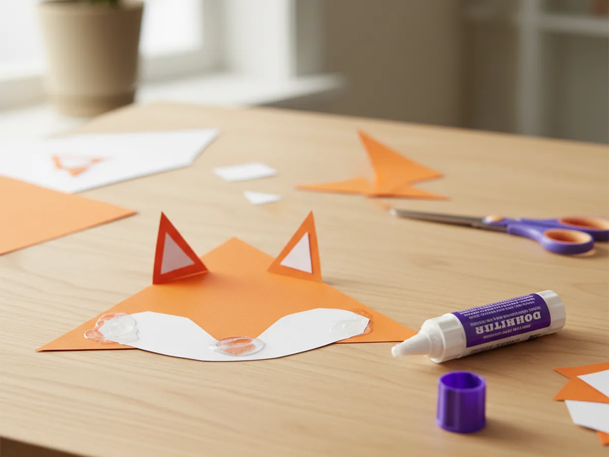
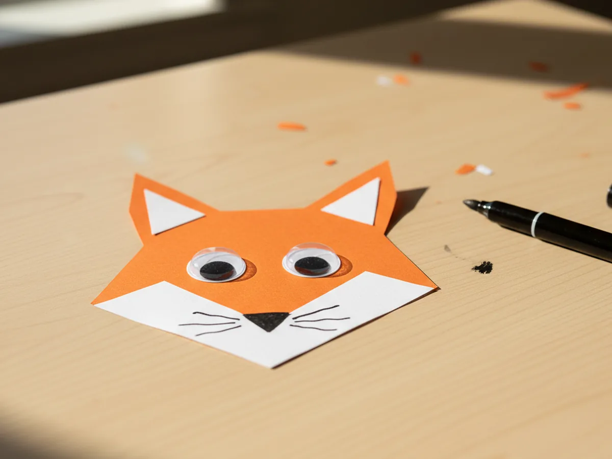
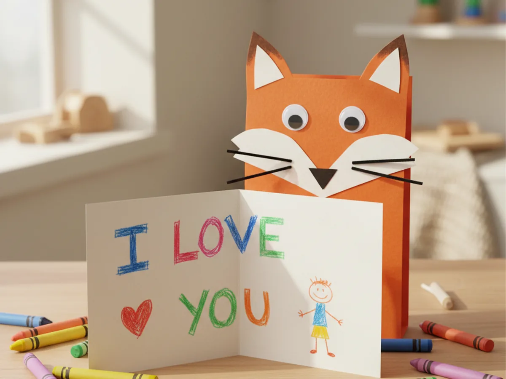

If your little one is into woodland animals, fall vibes, or just anything with a cute face, this fox paper craft is the cozy afternoon project you have been looking for. With one orange folded triangle and a handful of paper scraps, you and your child can build a stand-up fox face card in about 25 minutes, no special skills required. 🦊
The whole project uses simple folds, easy cuts, and three friendly colors, so even a four-year-old can take real ownership of the build. By the end you will have a charming little woodland friend that sits proudly on a shelf, gets handed to Grandma as a card, or becomes the start of a whole paper forest of animals.
Why Kids Love This Craft
Foxes have a kind of storybook magic for young kids. They show up in picture books, cartoons, and bedtime stories as clever, sweet, sneaky little characters, so making one at the kitchen table feels like bringing a tiny friend to life. Watching a plain orange square turn into a recognizable fox face with eyes, ears, and a snout gives kids that delicious "I made this" thrill.
This easy fox paper craft also sneaks in a lot of quiet skill-building. Folding the triangle teaches early symmetry, cutting the ears and snout builds fine motor control, and placing the eyes and nose strengthens hand-eye coordination. Because every shape is small and forgiving, even crooked cuts still look like part of the charm. The finished face hides a lot of imperfection behind that big friendly grin.
And then there is the storytelling part, which is honestly half the fun. Once the fox is finished, your child will give it a name, a voice, and a whole personality before the glue is even dry. This kind of paper fox craft for kids sits right in the sweet spot of easy enough to finish and cute enough to play with afterward. 🎨

What You'll Need
Here is everything you need to make this fox paper craft together at home. Lay each supply out before you sit down so the project flows smoothly and no one has to hop up mid-craft.
- Crayola Construction Paper (240 Sheets, 12 Colors), includes the bright orange, white, and black sheets that make the fox face come to life.
- Astrobrights Cardstock, 65 lb, Primary 5-Color Assortment (250 Sheets), sturdier orange cardstock if you want the fox face to stand up on its own with extra firmness.
- Fiskars 5 Inch Blunt-Tip Kids Scissors, safe blunt blades that still cut paper cleanly for little hands learning to cut shapes.
- Elmer's All Purpose School Glue Sticks (30 Count), clean and washable, perfect for gluing ears and snouts without any wet mess.
- 1,000 Pack Self-Adhesive Googly Eyes, Assorted Sizes, two medium eyes give the fox a sweet expressive face in seconds.
- Sharpie Permanent Markers, Fine Tip, Black (12 Count), for adding tiny whiskers, mouth lines, and any sweet drawings inside the card.
- Crayola Broad Line Markers (10 Classic Colors), for coloring the inside of the card with messages, hearts, and forest scenes.
- A pencil, for lightly sketching the ear and snout shapes before cutting.
- A ruler, for measuring an even square of orange paper if needed.
Step-by-Step Instructions
This fox paper craft is genuinely forgiving and beginner-friendly, so go at your child's pace, let them help with every fold and cut, and have fun bringing the little fox to life together.
Step 1: Fold the Orange Paper into a Triangle Face
Start with one large square of bright orange construction paper, around 9 by 9 inches. Lay it flat on the table, then fold it in half diagonally so the two opposite corners meet and you get a clean triangle. Crease the fold firmly with a fingernail or the side of a closed glue stick. Set the triangle down with the folded edge at the top and the open edge at the bottom, so the triangle stands like a little tent. This folded triangle becomes the body and face of your paper fox in one easy move.
Let your child press down on the crease. Kids love this part because the simple fold immediately starts to look like an animal face.

Step 2: Cut the Fox Ears
From a separate sheet of orange paper, cut two small pointed triangles for the outer ears, each about two inches tall. Then from a sheet of white paper, cut two slightly smaller pointed triangles for the inner ears. The ears do not need to be perfect, so let your child do as much of the cutting as their fine motor skills allow. Slightly wonky ears actually make the fox paper craft for kids look more handmade and charming.
Lay all four ear pieces side by side on the table to make sure each orange outer ear has a matching smaller white inner ear ready to go on top.

Step 3: Glue the Ears onto the Triangle Face
Run a thin layer of glue stick on the back of each small white inner ear and press it onto the matching orange outer ear, leaving a little orange border showing around the white shape. Once both ears are layered, flip the folded triangle face so the front panel is showing, and glue one finished ear behind each top corner so just the tips poke up. Press firmly for a few seconds so the ears stay put. This is where the triangle suddenly transforms into a recognizable handmade fox craft.
Step back and admire it together. Even with no eyes or snout yet, the fox shape already pops, and most kids cannot believe how fast it came together.

Step 4: Add the White Snout
Now for the cute fluffy belly of the face. Cut a rounded white paper shape, roughly an oval or wide teardrop, about three inches wide. This piece will be the white snout that wraps under the chin and gives the fox his classic two-tone look. Glue it onto the lower half of the orange triangle so the rounded top of the snout sits just below where the eyes will go, and the wider bottom hugs the bottom edge of the triangle. The cute fox paper craft is really starting to feel like a real animal now.
Let your child choose the snout shape. A rounder snout makes the fox look younger and sweeter, while a longer pointed snout gives the fox a slightly older, more clever vibe.

Step 5: Add the Eyes, Nose, and Whiskers
Time for the face details that bring the fox to life. Peel and stick two medium googly eyes above the white snout, leaving a bit of space between them so the face looks balanced. Cut a small black paper triangle, about half an inch wide, and glue it pointing down at the very top of the white snout to make the nose. Then take a black marker and draw three tiny whisker lines on each side of the snout, plus a soft little curved smile under the nose. Watching your child's paper fox craft get its first facial expression is honestly such a sweet moment.
Encourage your child to take the lead on the eyes. Slightly off-center placement gives the fox a goofy, curious personality that feels uniquely theirs.

Step 6: Open and Decorate the Inside
Carefully open the folded triangle to reveal the blank inside of the card. Let your child draw, write, or dictate a sweet little message. Younger kids might scribble a heart, a small tree, or a wobbly "I love you," while older kids might write a real note for a friend, a grandparent, or themselves. Once the inside is decorated, gently close and reopen the fox a few times to make sure the fold still stands up well. Hand the finished paper craft to your little one and let them give their new fox friend a name. 💛
Stand the finished fox on a shelf, a windowsill, or the family table. A handmade fox paper craft like this one tends to stick around the house for weeks because every time someone walks past, they smile.

Variations to Try
Arctic Fox Edition: Swap the orange paper for white cardstock and use light grey paper for the inner ears and snout. Add tiny blue paper snowflakes around the face for a wintery, snowy version that fits beautifully into Christmas or winter craft sessions.
Whole Woodland Family: Use the same folded triangle base to build a paper bear with brown paper, a paper raccoon with grey paper, and a paper owl with patterned paper. Line them up on a shelf to create a tiny forest scene your child can play with for weeks.
Fox Finger Puppet: Skip the folded card base and glue the fox face onto a small paper tube that fits over your child's finger. Suddenly the fox can talk, dance, and star in homemade puppet shows after dinner.
Final Thoughts
This fox paper craft is one of those quiet projects that looks like it took real talent, but actually comes together with a simple fold and a few snipped shapes. The finished little fox face becomes a tiny family memory, and the proud look on your child's face when they show it to Dad, Grandma, or a sibling is honestly the very best part. ✨
If your child loved making this fox, save the tutorial on Pinterest so you can come back to it next rainy afternoon, or share it with a friend looking for a sweet woodland-themed activity. Happy crafting, friend.
More Crafts You'll Love
If your little one enjoyed making this fox card, they will love these other sweet animal-inspired paper crafts next: